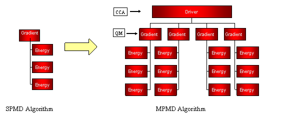

Hierarchical Parallelism in Computational Chemistry using Common Component Architecture and Global Arrays
(POC: Manojkumar Krishnan, Jarek Nieplocha - PNNL)
Use-case
Numerical Hessian Algorithm: Determination of energy second derivatives through numerical differentiation of
gradients, which may in turn be obtained from numerical differentiation of
energies. Single
energy calculation (SPMD Style) does not scale well beyond certain number of processes (i.e. limited scalability). Hierarchical parallelism (MCMD Programming) can effectively utilize variable degrees of parallelism at the gradient and hessian level.
Approach
In the overall algorithm, a CCA Hessian driver component is used to create subgroups to instantiate QM components to calculate gradients. These components in turn, may need to calculate numerical gradients and will therefore, need to create subgroups to calculate multiple energies. This particular algorithm offers essentially three levels of parallelism: one at the CCA (Hessian) level, one at the gradient level and another to calculate the energy (each energy itself can use a large number of processors).

Numerical Hessian Calculation: Hierarchical Parallelism
CCA Implementation
The current builder services can barely support very simple two-level parallel schemes (difficult to program). Run-time reconfiguration of processor groups and starting new components requires breaking and rebuilding the connections. Communication and interaction between components running on different processor groups can lead to hard to debug problems without the CCA standard way of specifying and agreeing on group context and scope.
Technology/Requirements
New MCMD Service and component software compatible with MCMD parallelism is required.
- Creation and management of processor groups
- In order to express and manage hierarchical parallelism though the use of processor groups, it is essential to support processor groups at the component level. This promotes parallelism at the component level, parallelism within the component, and parallelism within a subroutine.
- CCA Representation for groups id, membership
- It is desirable for CCA groups and component management capabilities to be independent of specific parallel programming models (MPI, PVM, CAF, GA support idea of processor groups/teams. MPI model must be supported) and languages. If the components developed from different parallel models (e.g. GA in NWChem and MPI in ScaLAPACK, PETSc) interact, then there should be a universal way of representing group ids, group membership, etc.
- coordination of concurrent and nested SCMD/MCMD tasks
- Mapping of component to groups and their coordination
- When a component is created, assigning a processor group to that component will make sure that component runs only on that processor group. This indeed promotes easy to use MCMD programming, which is currently very hard to do from an application perspective.
- Perform dynamic run-time reconfiguration of processor groups depending on the problem size and the algorithm/component chosen. Includes loading new components selectively without tearing and rebuilding all the connections.
- In our use-case, the MCMD driver dynamically instantiates QM components based on the number of energy calculations per gradient. However, load balancing became a serious problem beyond 32 processors, and therefore, the MCMD driver instantiates multiple components for larger processor runs (> 32 processors). For now, this number is determined empirically, as it was hard to reconfigure components and groups at run-time based on algorithmic performance.
- Facilitate dynamic behavior of the application itself, for example:
- Swapping components based on numerical or computational performance on the processor subgroups.
- Resizing processor groups based on memory requirements or scaling characteristics.
- Adding explicit processor group awareness to the CCA scientific component software.
- MCMD can be exploited at large-scale to improve application scalability, if the standard components (like solvers, I/O, data) are made processor group aware.